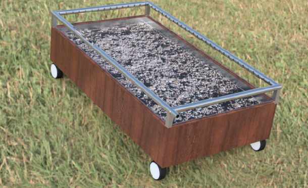

以前野菜を育てていたがなぜか枯れてしまい、原因を探るとおそらく日光不足だった。育てていたものがよりよく育ち野菜作りが楽しくなるように考えた。
家庭で野菜を作る幅広い年代や野菜作りに適していない環境にある方。
誰でも簡単に野菜作りが可能
商品名 野菜トレトレさん

移動可能なものにすることにより日光が当たる場所への移動が容易にできる。 また、ホースをつなぐことにより水やりは蛇口をひねることにより容易にできる。